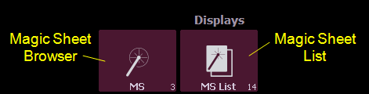
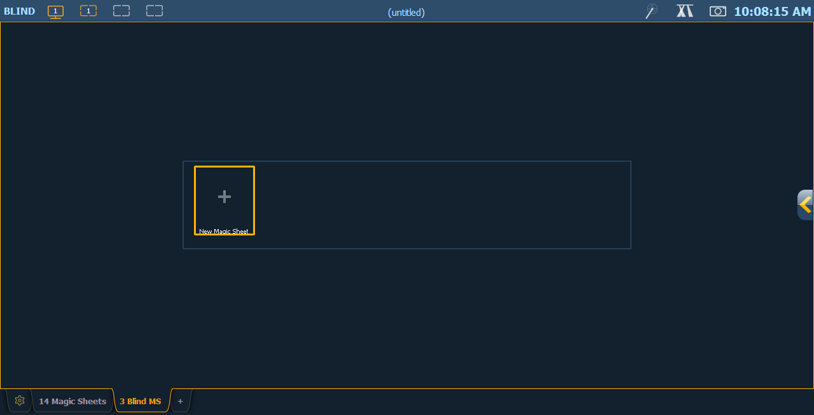
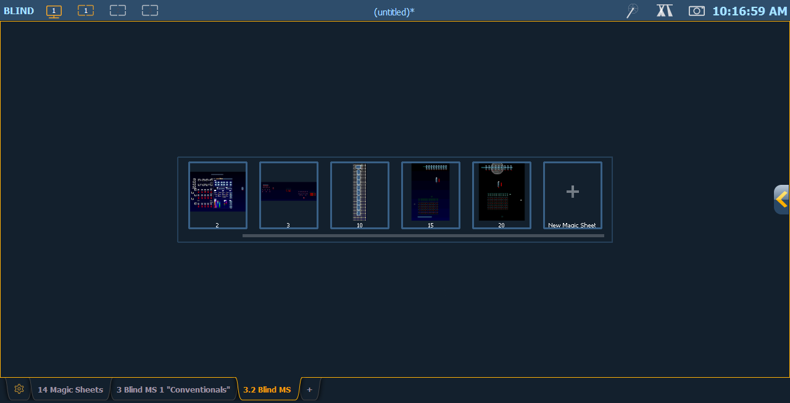

Open the magic sheet browser by pressing [Tab] [3], or by selecting the magic sheet browser icon from the home screen.

If no magic sheets exist in the show file, the magic sheet browser will be blank except for the New Magic Sheet icon. Click on the icon to open the magic sheet editor.

After you have created a magic sheet, you can recall a specific magic sheet, by pressing [Displays] {Magic Sheet} [#] [Enter] or you can navigate to Displays> Record Targets>Magic Sheet and press [Select] to open the magic sheet list (see Magic Sheet List ).
All available magic sheets will also be shown in the magic sheet browser.

Magic Sheets can also be accessed from the direct selects. Clicking on a magic sheet direct select will open the Magic Sheet tab and display the selected magic sheet. Pressing a different magic sheet direct select will change the displayed sheet. See Using Direct Selects